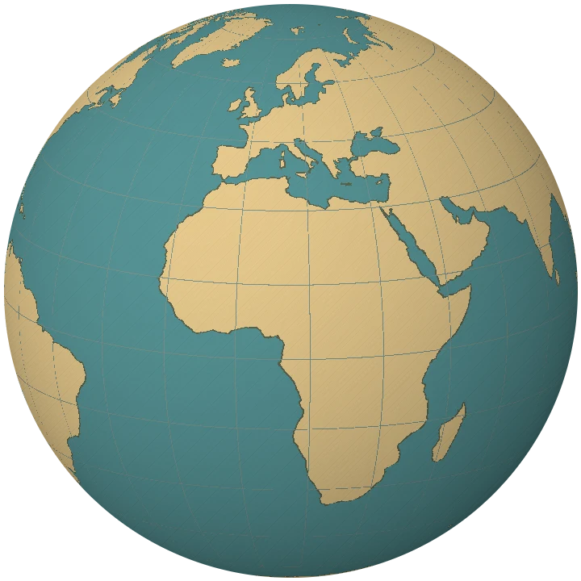
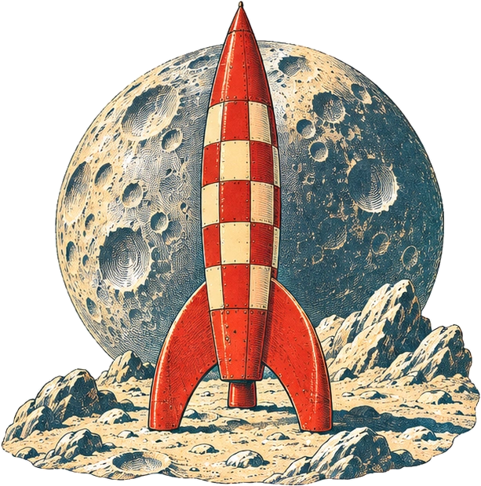
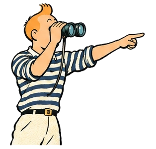
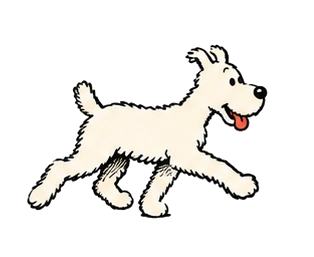

<!doctype html>
<html lang="fa" dir="rtl">
<meta charset="utf-8">
<title>تن‌تن تا ماه رفت؟</title>
<style>
*{box-sizing:border-box}
body{margin:0;background:#102039}
main{position:relative;isolation:isolate;overflow:hidden;width:1080px;height:1920px;background:radial-gradient(ellipse at 88% 55%,#254c64,#102639 59%,#101b2c);color:#fff1cd}
.sky, .grain{position:absolute;inset:0;width:100%;height:100%}
h1{position:absolute;top:242px;left:65px;right:65px;margin:0;text-align:center;font:900 169px/1.3 'Noto Sans Arabic',sans-serif;transform:rotate(-4deg);text-shadow:4px 7px #0a1824}
h1 span{display:table;margin:12px auto 0;padding:3px 36px 14px;background:#f25c4c;color:#101e2b;font-size:127px;line-height:1.38;text-shadow:none;box-shadow:8px 8px #090e1d}
img{position:absolute;filter:drop-shadow(4px 6px 0 #0c1d29)}
.moon{width:520px;right:31px;top:757px;transform:rotate(10deg)}
.earth{width:1510px;top:1385px;left:-436px;transform:rotate(-23deg)}
.tintin{width:622px;left:-9px;top:922px;transform:rotate(-6deg)}
.dog{width:332px;top:1338px;left:474px;transform:rotate(-7deg)}
.grain{pointer-events:none;opacity:.13;mix-blend-mode:soft-light}
</style>
<main>
<svg class="sky" viewBox="0 0 1080 1920" aria-hidden="true">
<defs><pattern id="star" width="203" height="189" patternUnits="userSpaceOnUse" patternTransform="rotate(17)"><circle cx="23" cy="34" r="2" fill="#fbe4be"/><circle cx="105" cy="127" r="1.2" fill="white"/><circle cx="174" cy="51" r="1" fill="white"/></pattern></defs>
<rect width="1080" height="1920" fill="url(#star)"/>
<g fill="none" stroke="#99b8b4" opacity=".38"><ellipse cx="510" cy="960" rx="803" ry="626" transform="rotate(-49 510 960)" stroke-dasharray="7 13"/><circle cx="830" cy="1003" r="318"/><circle cx="830" cy="1003" r="328" stroke-dasharray="2 13"/></g>
<path d="M-140 1775 Q765 1390 828 1030" fill="none" stroke="#fa7760" stroke-width="7" stroke-dasharray="22 17"/>
<g fill="#f8e3ba"><path id="spark" d="M166 733l5 19 18 5-18 5-5 18-5-18-18-5 18-5z"/><use href="#spark" transform="translate(784 -525)"/><use href="#spark" transform="translate(782 660)"/><use href="#spark" transform="translate(-60 -560)"/></g>
</svg>
<h1>تن‌تن<span>تا ماه رفت؟</span></h1>




<svg class="grain"><filter id="paper"><feTurbulence type="fractalNoise" baseFrequency=".61" numOctaves="3" stitchTiles="stitch"/></filter><rect width="100%" height="100%" filter="url(#paper)"/></svg>
</main></html>
